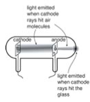

| Chapter 1.6: The Divisible Atom |
| "The opposite of a correct statement is a false statement. But the opposite of a profound truth may well be another profound truth." - Neils Bohr (1865-1962) |
Dalton’s theory of atoms as indivisible, indestructible, objects, of different sizes, weights, and perhaps shapes, depending on the element, held up for almost 100 years, although there was considerable dissent about whether atoms really existed, particularly among philosophers (a wacky bunch, if ever there was one). By 1900 the atomic theory was almost universally accepted by chemists. More evidence began to accumulate, more elements were discovered, and it even became possible to calculate the number of atoms in a particular sample. The first step along this direction was made by Amedeo Avogadro (1776 - 1856); in 1811 he proposed that, under conditions of equal temperature and pressure, equal volumes of gases contained equal numbers of particles (molecules) and that the densities of the gases (that is their weight divided by their volume) were proportional to the weight of the individual molecules. |
1.1 Atoms |
This was expanded upon by the Austrian high school teacher Josef Loschmidt (1821-1895) who, in 1865, combined Avogadro's conclusion with the assumption that atoms and molecules move very much as inelastic objects (think billiard balls). This enabled him to calculate the force a molecule would exert when traveling at a particular speed (something difficult to measure) and relate that to the pressure (something that can actually be measured). In fact, this assumption enabled physicists to deduce that the temperature of a gas is related to the average kinetic energy of the molecules within it - a concept we will return to shortly. Probing the substructure of atoms: The excitement about electricity and its possible uses prompted Alessandro Volta (1745 –1827) to develop the first battery, now known as a Voltaic Pile. He alternated sheets of two different metals, such as zinc and copper, with discs soaked in salt water (brine). It produced the first steady electrical current that, when applied to frog muscles caused them to contract. Such observations indicated that bioelectricity could be generated non-biologically, that it was no different than any other form of electricity. What neither Volta nor Galvani knew was the nature of electricity - what was it, exactly, and how did it "flow" from place to place? What was in the spark that jumped from finger to metal door knob, or from Benjamin Franklin's (1705 – 1790) kite string to his finger? What was this electrical “fluid” made of? |
Question to ponder:
|
| Progress in the understanding of the nature and behavior of electricity continued throughout the 19th century, and the power of electricity was harnessed to produce dramatic changes in the way people lived and worked - powering factories, lighting houses and streets, etc. Yet there was no real deep of understanding as to the physical nature of electricity. It was known that electric charge came in two forms, positive and negative and that these charges were conserved, that is, they could not be created or destroyed (ideas first proposed by Franklin). The electrical (charged) nature of matter was well established, but not where that charge came from or ”what it was”. |
| A key step that began to unravel the idea of an indivisible atom was made by J. J. Thompson (1856 – 1940), another Mancunian40. While the idea of electricity, was now well appreciated, Thompson and other scientists wanted to study it in a more controlled manner. They used what were (and are now) known as cathode ray tubes (CRTs); once common in televisions, these are being replaced by various “flat screen” devices. |  |
|
“Since electrons can be produced by all chemical elements, we must conclude that they enter the constitution of all atoms. We have thus taken our first step in understanding the structure of the atom” – J. J. Thompson. The Atomic Theory, Oxford, Clarendon Press. 1914.[link] The discovery of the electron made the old idea of an atom as a little indestructible billiard ball-like object obsolete, and necessitated a new model. It is an example of a paradigm shift [A term made popular (although often misunderstood) by T. S. Kuhn, The Structure of Scientific Revolutions, 1st. ed., Chicago: Univ. of Chicago Pr., 1962]– a fundamental change in scientific thinking driven by new evidence. Thompson’s first version of this new model became known as the “plum pudding” model. His basic idea was that the atom is a ball of positively charged, but apparently amorphous matter with electrons studded here and there (like the raisins in the pudding); since it contained equal numbers of positive and negative charges the overall structure was electrically neutral. Subsequent work by Thompson and Robert A. Millikan (1868 – 1953) established that all electrons are identical, each with the same (very small) mass and negative charge. The mass of an electron is less than 1000th of the mass of a hydrogen atom. Thompson's proposed plum pudding model of the atom spurred much experimental and theoretical work and led to a remarkable number of subsequent discoveries. For example, it was soon recognized that the β (beta) particles emitted by some radioactive minerals and elements, were, in fact, electrons. Other studies found that the number of electrons present in the atoms of a particular element was roughly proportional to half the element's atomic weight, although why this should be the case was unclear. Based on these experimental results Rutherford reasoned that the positively charged α particles were being repelled by positive parts of the atom. Since only a very small percentage of α particles were deflected, only a very small region of each atom could be positively charged. That is: the positive charge in an atom could not be spread out more or less uniformly as the plum pudding model assumed, instead they must be concentrated in a very small region. This implied that most of the atom is empty (remember the “void” of the ancient Greeks?) or occupied by something that posed little or no resistance to the passage of the α particles. Again we see a scientist making a huge intuitive leap from the experimental evidence to a hypothesis that is consistent with that evidence and that makes specific predictions that can be confirmed or falsified by further experiment and observation. Rutherford's model – which became known as the planetary model, postulated a very (very) small nucleus where all of the positive charge and nearly all of the mass of the atom was located, this nucleus was encircled by electrons. |
In 1920 Rutherford went on to identify the unit of positive charge and call it the proton; in 1932, James Chadwick (1891-1974)(who co-incidentally studied at the University of Manchester) identified a second component of the nucleus, the neutron. Neutrons are heavy, like protons - in fact they are slightly heavier than protons, but have no charge. Neutrons are not completely stable, however, and can decay into a proton, an electron, and another particle, called an anti-neutrino. Both the electron (a β-particle) and the anti-neutrino are expelled from the nucleus while the proton remains. Changing a neutron into a proton changes the identity of the element. |
1.1
Atoms |
Question to answer:
Questions for ponder:
Questions for later:
|
| 27-Jun-2012 |